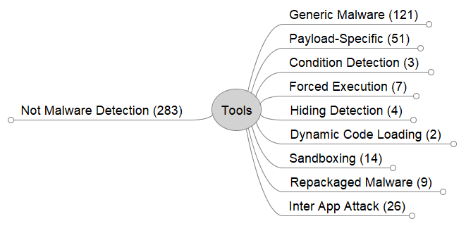

Tool Collection
Tool Selection
We systematically collected a list of malware detection papers by searching top conferences/journals based on CORE ranking and Journal Citation Reports (JCR) between 2010 and 2021.
The software engineering conferences/journals include:
- International Conference on Automated Software Engineering (ASE)
- Joint European Software Engineering Conference and Symposium on the Foundations of Software Engineering (ESEC/FSE)
- International Conference on Software Engineering (ICSE)
- International Symposium on Software Testing and Analysis (ISSTA)
- Empirical Software Engineering (EMSE)
- IEEE Software
- Information and Software Technology (IST)
- Journal of Systems and Software (JSS)
- Transactions on Software Engineering (TSE)
- Transactions on Software Engineering and Methodology (TOSEM)
The security conferences/journals include:
- Conference on Computer and Communications Security (CCS)
- Symposium on Security and Privacy (S&P)
- Network and Distributed System Security Symposium (NDSS)
- USENIX Security Symposium
- Transactions on Information Forensics and Security (TIFS)
- Transactions on Dependable and Secure Computing (TDSC)
- Journal of Computers & Security
- International Journal of Information Security (IJIS)
- Security & Privacy Journal
- Annual Computer Security Applications Conference (ACSAC)
We further augmented the resulting list with malware detection techniques from seven recent surveys:
- Qiu, Junyang, Jun Zhang, Wei Luo, Lei Pan, Surya Nepal, and Yang Xiang. “A survey of Android malware detection with deep neural models.” ACM Computing Surveys (CSUR) 53, no. 6 (2020): 1-36.
- Arshad, Saba, Munam Ali Shah, Abid Khan, and Mansoor Ahmed. “Android malware detection & protection: a survey.” International Journal of Advanced Computer Science and Applications 7, no. 2 (2016): 463-475.
- Rashidi, Bahman, and Carol J. Fung. “A Survey of Android Security Threats and Defenses.” J. Wirel. Mob. Networks Ubiquitous Comput. Dependable Appl. 6, no. 3 (2015): 3-35.
- Tam, Kimberly, Ali Feizollah, Nor Badrul Anuar, Rosli Salleh, and Lorenzo Cavallaro. “The evolution of android malware and android analysis techniques.” ACM Computing Surveys (CSUR) 49, no. 4 (2017): 1-41.
- Faruki, Parvez, Ammar Bharmal, Vijay Laxmi, Vijay Ganmoor, Manoj Singh Gaur, Mauro Conti, and Muttukrishnan Rajarajan. “Android security: a survey of issues, malware penetration, and defenses.” IEEE communications surveys & tutorials 17, no. 2 (2014): 998-1022.
- Alqahtani, Ebtesam J., Rachid Zagrouba, and Abdullah Almuhaideb. “A Survey on Android Malware Detection Techniques Using Machine Learning Algorithms.” In 2019 Sixth International Conference on Software Defined Systems (SDS), pp. 110-117. IEEE, 2019.
- Souri, Alireza, and Rahil Hosseini. “A state-of-the-art survey of malware detection approaches using data mining techniques.” Human-centric Computing and Information Sciences 8, no. 1 (2018): 1-22.
Tool Categorization
The image below lists the categorization of Android security papers found:

These categories include:
- Not Malware Detection - Papers irrelevant to malware detection
- Generic Malware - Papers aimed to detect malware by learning features from a large set of benign and malicious applications.
- Payload Specific - Papers aimed to targeting a specific type of payload (ex., info-leak, overlay phishing, privilege escalation)
- Condition Detection - Papers aimed at focusing on conditions that lead to the malicious payload
- Forced Execution - Papers aimed to force app execution into the malicious path
- Hiding Detection - Papers aimed at flagging the difference between app behavior and its presented user interface
- Dynamic Loading - Papers aimed at detecting dynamic code loading
- Sandboxing - Papers aimed at creating analysis frameworks to aid researchers in analyzing malware samples
- Repackaged Malware - Papers aimed at detecting repackaged apps
- Inter App Attacks - Papers aimed at detecting apps that collude together to perform an attack
Details of the papers within each category can be found within this excel file.